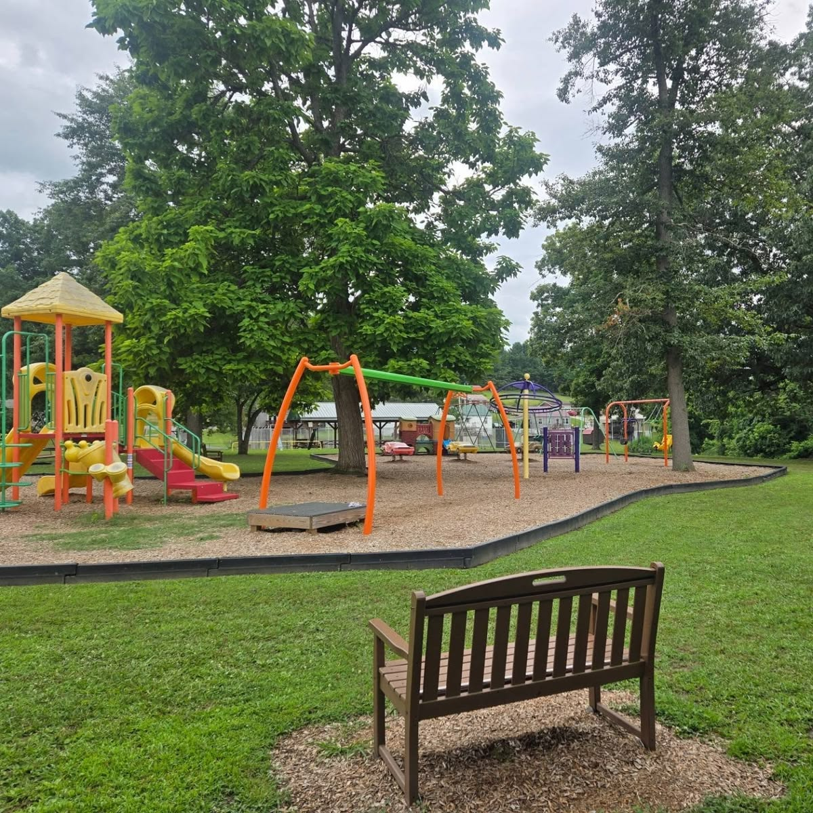

OVERVIEW
About the Park
Basic information about the public space selected for our study.

Mumbai, Maharashtra
Public Park
Public Space Usage
Digital Mapping
QUICK INFORMATION
Park at a Glance
Sample Local Area
6:00 AM – 10:00 PM
Residents & Visitors
Community Park
PUBLIC SPACE USAGE
Common Activities
Sample activities observed or expected in the park. These can be replaced with actual field observations later.
Walking
Visitors use the pathways for casual walking and daily exercise.
Exercise
The open areas can be used for light exercise and fitness activities.
Social Interaction
Visitors gather in seating and open areas for conversations and interaction.
Recreation
Children and families use recreational areas for leisure activities.
SURROUNDINGS
Understanding the Space
The surrounding environment plays an important role in how people access and use a public park.
FIELD STUDY
Why We Are Studying This Park
This park is being studied to understand patterns of public-space usage, identify existing facilities and problems, collect community feedback and suggest practical improvements.